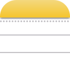

Search…
All
Claude

Notes
figma.com/file/ClipStack-site—launch-hero

⌘⇧X — the shortcut I actually remember
Tagline draft: your clipboard, finally organized
Hero image.png
Clipboard history
Open with ⌘⇧X. Filter by app, search, and paste from your Mac or iPhone.